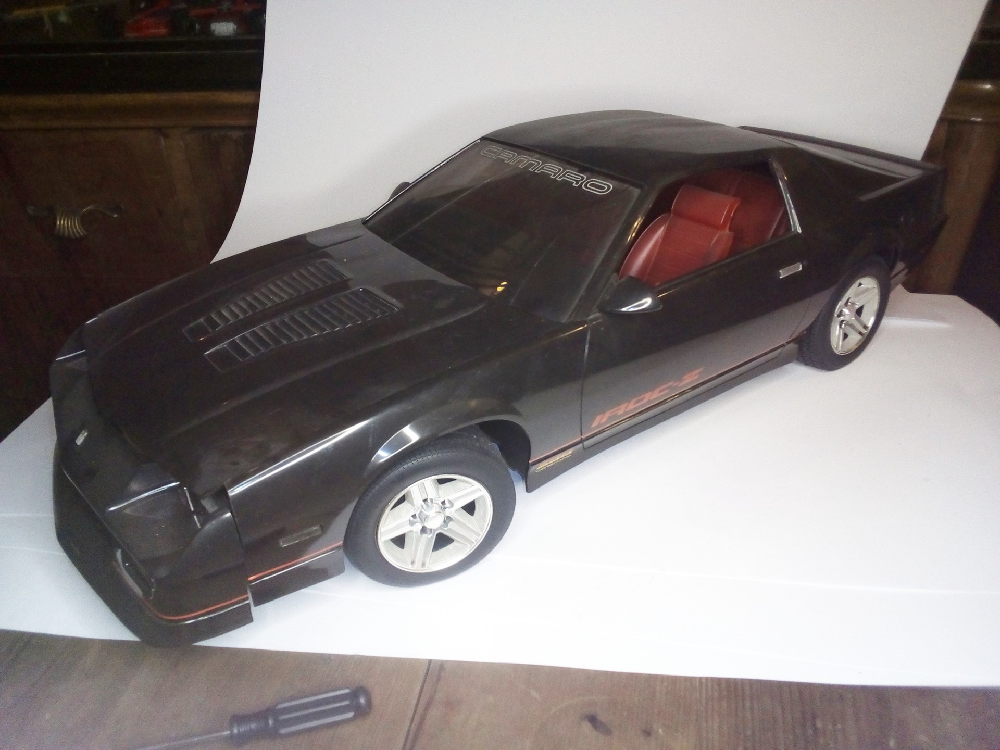
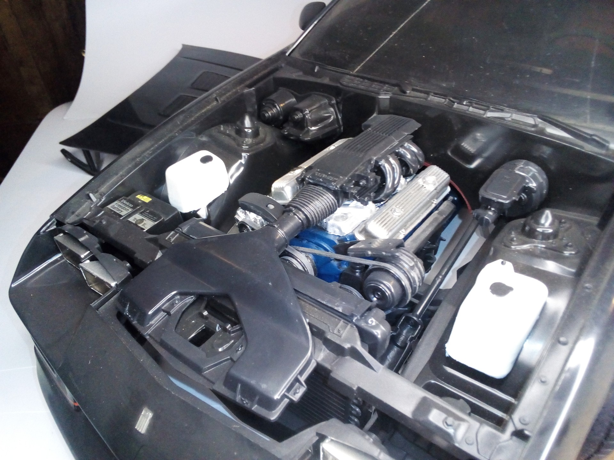
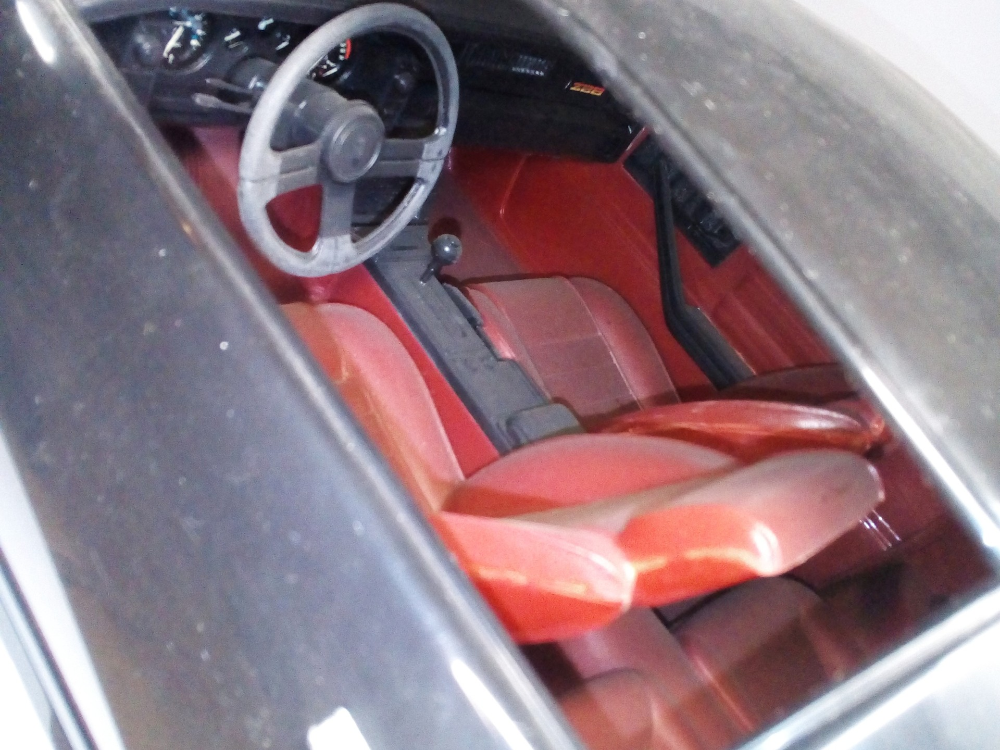

Auto e veicoli stradali · scale model archive
Chevrolet Camaro IROC-Z
Chevrolet Camaro IROC-Z — Kit: Monogram, Scale: 1/8. Impressive kit in huge 1/8 scale, nice car as well #1/8 #Monogram

Photo gallery


English description
Impressive kit in huge 1/8 scale, nice car as well
#1/8 #Monogram
Descrizione italiana
Notevole kit in enorme 1/8 scala, bella auto as well.